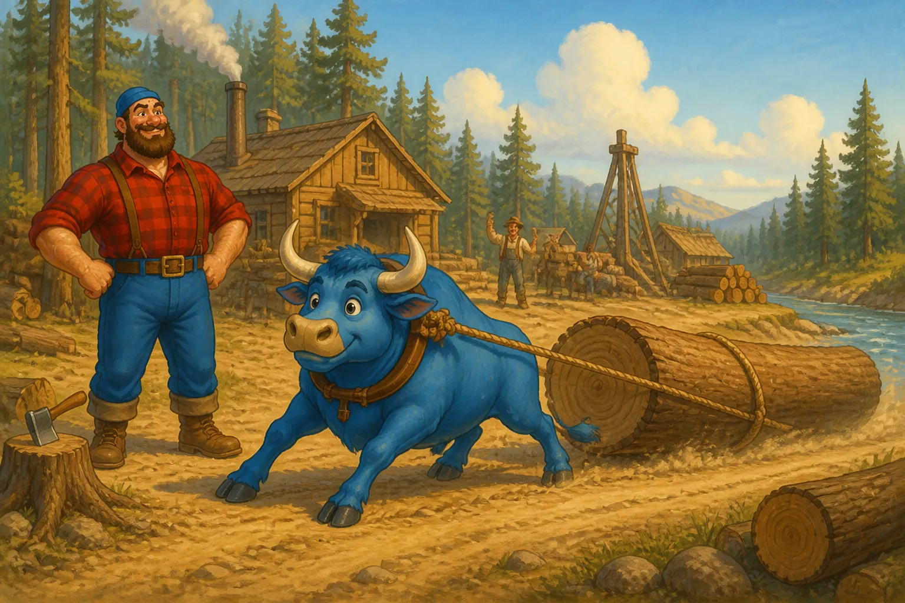
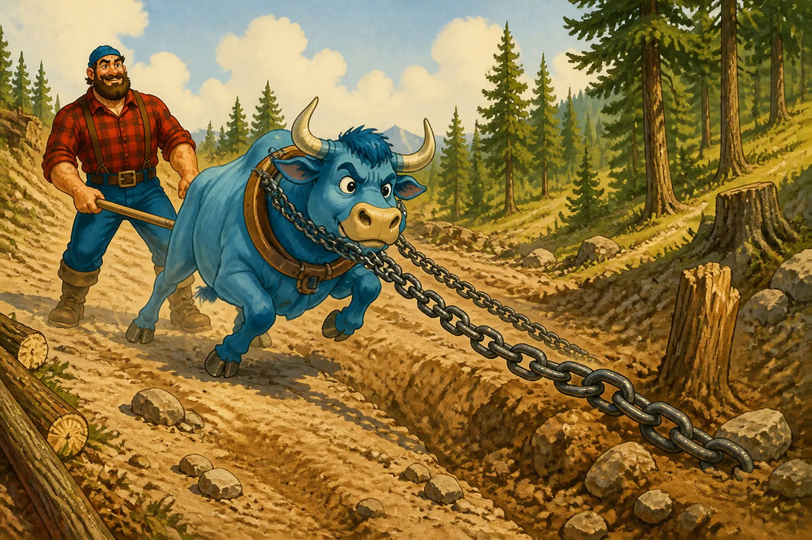
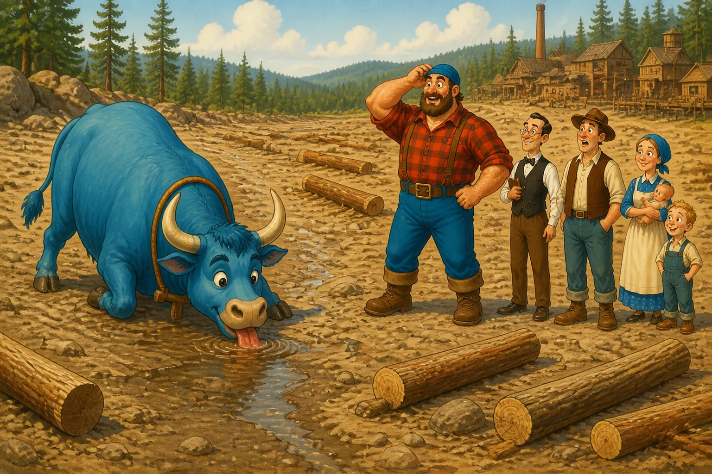
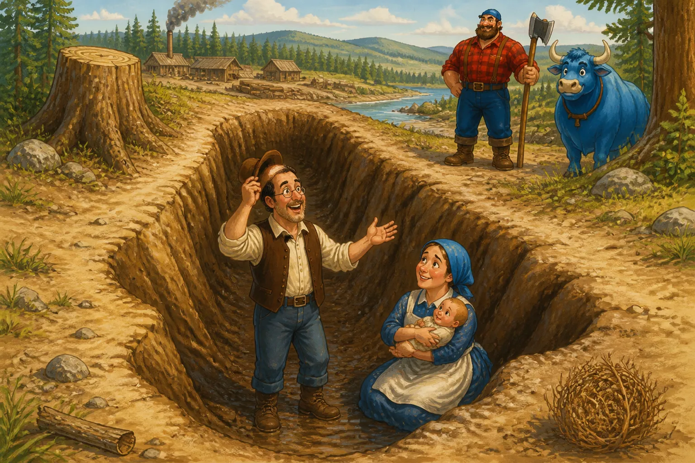

Babe, the big blue ox, constituted Paul Bunyan's assets and liabilities. History disagrees as to when, where and how Paul first acquired this bovine locomotive but his subsequent record is reliably established. Babe could pull anything that had two ends to it.
Babe was seven axe handles wide between the eyes according to some authorities; others equally dependable say forty-two axe handles and a plug of tobacco. Like other historical contradictions this comes from using different standards. Seven of Paul's axe handles were equal to a little more than forty-two of the ordinary kind.
When cost sheets were figured on Babe, Johnny Inkslinger found that upkeep and overhead were expensive but the charges for operation and depreciation were low and the efficiency was very high. How else could Paul have hauled logs to the landing a whole section (640 acres) at a time? He also used Babe to pull the kinks out of the crooked logging roads and it was on a job of this kind that Babe pulled a chain of three-inch links out into a straight bar.

They could never keep Babe more than one night at a camp for he would eat in one day all the feed one crew could tote to camp in a year. For a snack between meals he would eat fifty bales of hay, wire and all, and six men with pickaroons were kept busy picking the wire out of his teeth. Babe was a great pet and very docile as a general thing but he seemed to have a sense of humor and frequently got into mischief. He would sneak up behind a drive and drink all the water out of the river, leaving the logs high and dry.

It was impossible to build an ox-sling big enough to hoist Babe off the ground for shoeing, but after they logged off Dakota there was room for Babe to lie down for this operation.
Once in a while Babe would run away and be gone all day roaming all over the Northwestern country. His tracks were so far apart that it was impossible to follow him and so deep that a man falling into one could only be hauled out with difficulty and a long rope. Once a settler and his wife and baby fell into one of these tracks and the son got out when he was fifty-seven years old and reported the accident. These tracks today form the thousands of lakes in the "Land of the Sky-Blue Water."
